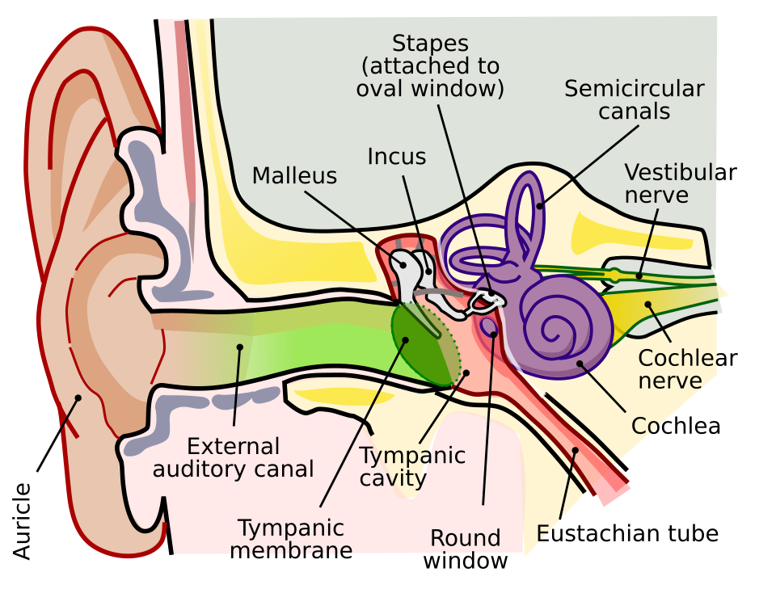

The Little Lion Daily
Singapore's rule of law balances individual rights with collective needs: Chief Justice
Why read it: Singapore is marking 200 years of the rule of law. Chief Justice Sundaresh Menon explains how the courts respect the government's right to make policy while making sure its powers stay within limits. It's a clear look at how the three branches of government check one another, which is core Social Studies material and a good warm-up for today's Future You page.
Read on channelnewsasia.com →"字述一年"开跑 10大候选字看尽年度风云
为什么值得读：一年快结束了，如果只能用一个汉字来总结2026年，你会选哪个？今年的候选字包括"弈""熬""惑""代"等。读一读每个字背后的故事，再想想：哪一个字最能代表你自己的这一年？（今天A2版的"汉字故事"也和这个话题有关。）
在联合早报阅读 →"Is that really what I sound like?!"
Why your voice on a recording sounds thin, squeaky and frankly embarrassing, and why your friends think it sounds perfectly normal.
8.02 pm Your group records a practice for Chinese oral. You do your part. Nailed it.
8.03 pm Someone plays it back in the chat.
8.03 pm + 2 s "WHO IS THAT?"
8.04 pm You leave the group chat. Briefly.
Relax. Nothing is wrong with your phone, and nothing is wrong with you. You have simply caught your brain in a lifelong lie. The voice you hear when you talk is not the voice the rest of the world hears. The recording is the honest one.
Here's why. Every sound you hear reaches your inner ear by a road. When other people talk, there's only one road. When you talk, there are two.
Road 1: the air route. Your vocal folds buzz, the air in front of your mouth wobbles, and those wobbles travel round your cheek and into your ear canal. They drum on your eardrum, which shakes three tiny bones in a row (the hammer, the anvil and the stirrup), which pass the shake into the cochlea, a fluid-filled, snail-shaped tube lined with sensor cells. The cochlea turns the wobble into nerve signals. This is the only road a microphone, or your friend's ear, ever uses.

Road 2: the secret tunnel. When you speak, the buzz from your throat also travels straight through the bones and soft tissue of your head to the cochlea, skipping the ear canal entirely. This is called bone conduction. Your skull is basically a speaker that only you can hear.
The catch: your head doesn't pass all pitches equally. Bone and tissue carry the deep, low-pitched parts of your voice better than the high ones. So the version arriving by Road 2 is boomier and richer, like someone turned the bass up. Your brain mixes both roads together and says, "Ah, that's me."
A recording strips out Road 2. Suddenly the bass is gone and you're left with the thinner, higher version that your family, your teachers and your CCA friends have been hearing all along. Psychologists even have a name for that awful moment: "voice confrontation".
One idea for why it stings so much: we tend to like things we're used to. You've had sixteen-ish years of hearing the bass-boosted version, so the real one sounds like a stranger doing a bad impression of you. Most people find that the more they listen to their recorded voice, the less it bothers them. Debaters, singers and radio presenters train exactly this way.
Bone conduction isn't just a party trick, either. Some sports headphones sit on your cheekbones instead of in your ears, sending sound through the bone so you can still hear traffic. And there's a famous story that Beethoven, as he lost his hearing, would clamp a rod between his teeth and rest the other end on his piano, so he could feel the music travel through his jaw. Whether every detail is true or not, the physics works.
- The stirrup bone (stapes) in your middle ear is the smallest bone in your body, only about 3 mm long. That's shorter than a grain of rice.
- A tiny muscle in your middle ear tightens when you hear very loud noises, and also when you talk. It quietly turns down the volume on your own voice.
- "Cochlea" comes from the Greek word for snail. Uncoiled, yours would be only about 3.5 cm long.
- Earwax mostly cleans itself. Talking and chewing move your jaw, which helps shuffle old wax towards the outside. Cotton buds tend to push it back in.
Hum a long "mmmmm". Now press your fingers gently over the openings of both ears and keep humming. It gets louder and deeper, even though you blocked the sound coming in.
Why?
Road 2 is still running through your skull, and blocking the ear canal stops some of that low sound from leaking back out, so more of it reaches your cochlea. Audiologists call it the occlusion effect.
Tie a metal spoon to the middle of a 1-metre piece of string. Wrap the ends around your index fingers and press your fingertips lightly into the outer part of your ears (no poking inside). Lean forward and let the spoon swing gently against a table edge. Instead of a little "tink", you'll hear something like a big church bell.
Why?
The vibration travels up the string and into your fingers and head, solid all the way. Solids carry vibration far better than open air, so much more of the spoon's ringing reaches you.